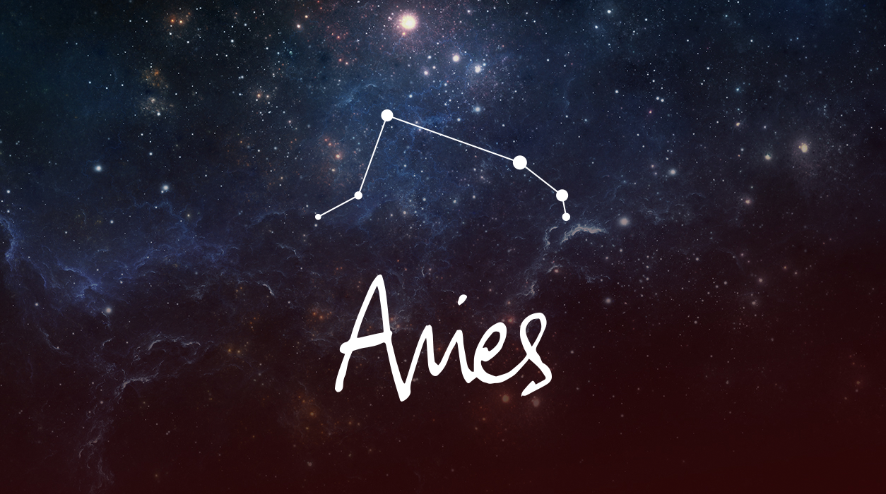
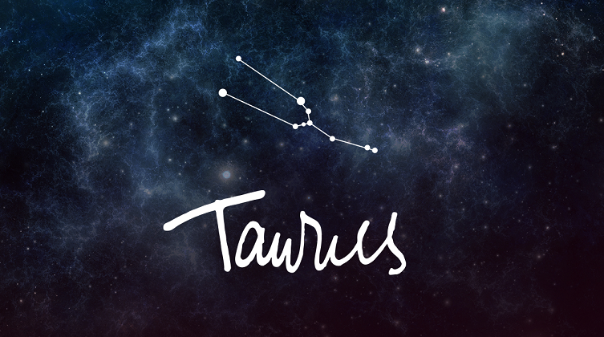
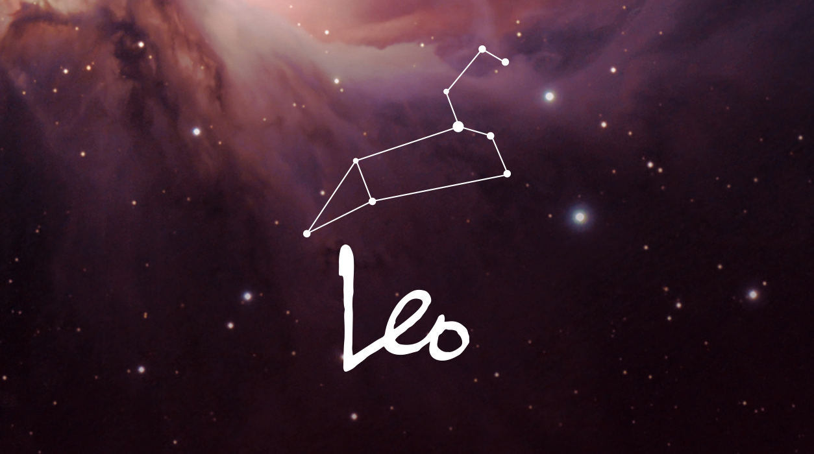
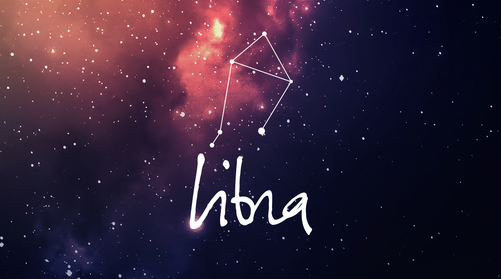
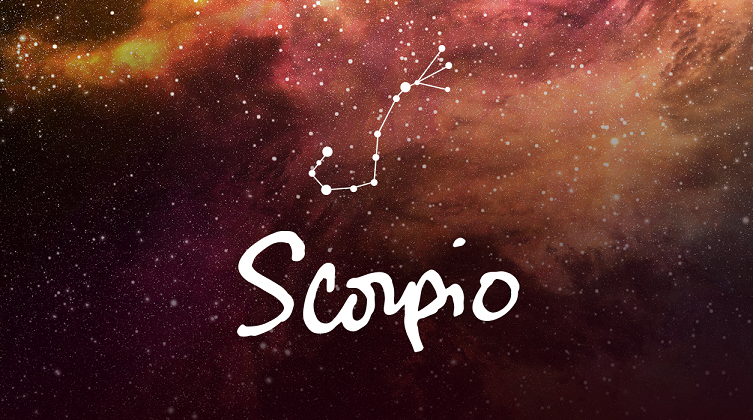

მერწყული (20 იანვარი — 18 თებერვალი)
მერწყული (♒) — ზოდიაქოს ნიშანი. იგი არის რიგით მეთერთმეტე ასტროლოგიური ნიშნების სისტემაში. ზოდიაქოს პრინციპების მიხედვით, მზე ამ ნიშანში იმყოფება დაახლოებით 20 იანვრიდან 18 (ან 19) თებერვლამდე. მერწყულის ზოდიაქო განსხვავდება მერწყულის თანავარსკვლავედისგან, სადაც მზე 16 თებერვლიდან 11 მარტამდე მოძრაობს. ასტროლოგიური თვალსაზრისით, მერწყულის მმართველია — ურანი. თანამმართველია — სატურნი. მერწყულის ზოდიაქოში „ეგზალტირებულია“ — ნეპტუნი, „დაცემულია“ — პლუტონი, „გამოძევებულია“ — მზე. მინეროლოგიური თვალსაზრისით, მერწყულის ძირითადი მინერალია: იაგუნდი. მას ასევე შეესაბამება: მარგალიტი, ამაზონიტი, ონიქსი, ტურმალინი.

თევზები ( 19 თებერვალი — 20 მარტი)
თევზები (♓) — ზოდიაქოს ნიშანი. იგი არის რიგით მეთორმეტე ასტროლოგიური ნიშნების სისტემაში. ზოდიაქოს პრინციპების მიხედვით, მზე ამ ნიშანში იმყოფება დაახლოებით 18 (ან 19) თებერვლიდან 20 (ან 21 ) მარტამდე. თევზების ზოდიაქო განსხვავდება თევზების თანავარსკვლავედისგან, სადაც მზე 12 მარტიდან 18 აპრილამდე მოძრაობს. ასტროლოგიური თვალსაზრისით, თევზების მმართველია — ნეპტუნი. თანამმართველია — იუპიტერი. თევზების ზოდიაქოში „ეგზალტირებულია“ — ვენერა, „დაცემულია“ — მერკური, „გამოძევებულია“ — მერკური. მინეროლოგიური თვალსაზრისით, თევზების ძირითადი მინერალია: ამეთვისტო. მას ასევე შეესაბამება: ალექსანდრიტი, ბელომორიტი, ზურმუხტი, მარჯანი.

ვერძი (21 მარტი — 20 აპრილი)
ვერძი (♈) — ზოდიაქოს ნიშანი. იგი არის რიგით პირველი ასტროლოგიური ნიშნების სისტემაში. დასავლური ასტროლოგიის მიხედვით, მზე ამ ნიშანში იმყოფება დაახლოებით 20 (ან 21) მარტიდან 20 აპრილამდე. ვერძის ზოდიაქო განსხვავდება ვერძის თანავარსკვლავედისგან, სადაც მზე 19 აპრილიდან 13 მაისამდე მოძრაობს. ასტროლოგიური თვალსაზრისით, ვერძის მმართველი პლანეტაა — მარსი. ვერძის ზოდიაქოში „ეგზალტირებულია“ — მზე, „დაცემულია“ — სატურნი, „გამოძევებულია“ — ვენერა. მინეროლოგიური თვალსაზრისით, ვერძის ძირითადი მინერალია: იასპი. მას ასევე შეესაბამება: ალმასი, ალმანდინი, ონიქსი, ტოპაზი, ქარვა, ძოწი.

კურო (19 აპრილი — 20 მაისი)
კურო (♉) — ზოდიაქოს ნიშანი. იგი არის რიგით მეორე ასტროლოგიური ნიშნების სისტემაში. ზოდიაქოს პრინციპების მიხედვით, მზე ამ ნიშანში იმყოფება დაახლოებით 21 აპრილიდან 20 (ან 21) მაისამდე. კუროს ზოდიაქო განსხვავდება კუროს თანავარსკვლავედისგან, სადაც მზე 14 მაისიდან 19 ივნისამდე მოძრაობს. ასტროლოგიური თვალსაზრისით, კუროს მმართველი პლანეტაა — ვენერა. კუროს ზოდიაქოში „ეგზალტირებულია“ — მთვარე, „დაცემულია“ — ურანი, „გამოძევებულია“ — მარსი და პლუტონი. მინეროლოგიური თვალსაზრისით, კუროს ძირითადი მინერალია: საფირონი. მას ასევე შეესაბამება: აქატი, ავანტიურინი, ლაზურიტი, ფირუზი, ქრიზოპრაზი.

კირჩხიბი (21 ივნისი — 22 ივლისი)
კირჩხიბი (♋) — ზოდიაქოს ნიშანი. იგი არის რიგით მეოთხე ასტროლოგიური ნიშნების სისტემაში. ზოდიაქოს პრინციპების მიხედვით, მზე ამ ნიშანში იმყოფება დაახლოებით 22 ივნისიდან 22 ივლისამდე. კირჩხიბის ზოდიაქო განსხვავდება კირჩხიბის თანავარსკვლავედისგან, სადაც მზე 21 ივლისიდან 9 აგვისტომდე მოძრაობს. ასტროლოგიური თვალსაზრისით, კირჩხიბის მმართველია — მთვარე. კირჩხიბის ზოდიაქოში „ეგზალტირებულია“ — იუპიტერი , „დაცემულია“ — მარსი, „გამოძევებულია“ — სატურნი. მინეროლოგიური თვალსაზრისით, კირჩხიბის ძირითადი მინერალია: ზურმუხტი. მას ასევე შეესაბამება: მთვარის ქვა, სარდიონი, მთის ბროლი, ჰემატიტი.

ლომი (22 ივლისი — 23 აგვისტო)
ლომი (♌) — ზოდიაქოს რიგით მეხუთე ასტროლოგიური ნიშანი. ზოდიაქოს პრინციპების მიხედვით, მზე ლომის ნიშანში იმყოფება დაახლოებით 23 ივლისიდან 22 (ან 23) აგვისტომდე. ლომის ზოდიაქო განსხვავდება ლომის თანავარსკვლავედისგან, სადაც მზე 10 აგვისტოდან 15 სექტემბრამდე მოძრაობს. ასტროლოგიური თვალსაზრისით, ლომის მმართველია — მზე. ლომის ზოდიაქოში „ეგზალტირებულია“ — პლუტონი, „დაცემულია“ — ნეპტუნი, „გამოძევებულია“ — ურანი და სატურნი. მინეროლოგიური თვალსაზრისით, ლომის ძირითადი მინერალია: სარდონიქსი. მას ასევე შეესაბამება: ლალი, ცირკონი, ციტრინი, ჟადეიტი.

ქალწული (23 აგვისტო — 23 სექტემბერი)
ქალწული (♍) — ზოდიაქოს ნიშანი. იგი არის რიგით მეექვსე ასტროლოგიური ნიშნების სისტემაში. ზოდიაქოს პრინციპების მიხედვით, მზე ამ ნიშანში იმყოფება დაახლოებით 23 აგვისტოდან 22 (ან 23) სექტემბრამდე. ქალწულის ზოდიაქო განსხვავდება ქალწულის თანავარსკვლავედისგან, სადაც მზე 16 სექტემბრიდან 30 ოქტომბრამდე მოძრაობს. ასტროლოგიური თვალსაზრისით, ქალწულის მმართველია — მერკური. ქალწულის ზოდიაქოში „ეგზალტირებულია“ — მერკური, „დაცემულია“ — ვენერა, „გამოძევებულია“ — ნეპტუნი და იუპიტერი. მინეროლოგიური თვალსაზრისით, ქალწულის ძირითადი მინერალია: სარდიონი. მას ასევე შეესაბამება: ლაზურიტი, ნეფრიტი, იასპი, ვეფხვის თვალი.

სასწორი (22 სექტემბერი — 23 ოქტომბერი)
სასწორი (♎) — ზოდიაქოს ნიშანი. იგი არის რიგით მეშვიდე ასტროლოგიური ნიშნების სისტემაში. ზოდიაქოს პრინციპების მიხედვით, მზე ამ ნიშანში იმყოფება დაახლოებით 22 (ან 23) სექტემბრიდან 22 (ან 23) ოქტომბრამდე. სასწორის ზოდიაქო განსხვავდება სასწორის თანავარსკვლავედისგან, სადაც მზე 31 ოქტომბრიდან 22 ნოემბრამდე მოძრაობს. ასტროლოგიური თვალსაზრისით, სასწორის მმართველია — ვენერა. სასწორის ზოდიაქოში „ეგზალტირებულია“ — სატურნი, „დაცემულია“ — მზე, „გამოძევებულია“ — მარსი. მინეროლოგიური თვალსაზრისით, სასწორის ძირითადი მინერალია: ქრიზოლითი. მას ასევე შეესაბამება: აქვამარინი, გიშერი, ნეფრიტი, როდონიტი.

მორიელი (23 ოქტომბერი — 21 ნოემბერი)
ღრიანკალი (♏) — ზოდიაქოს ნიშანი. იგი არის რიგით მერვე ასტროლოგიური ნიშნების სისტემაში. ზოდიაქოს პრინციპების მიხედვით, მზე ამ ნიშანში იმყოფება დაახლოებით 22 (ან 23) ოქტომბრიდან 22 (ან 23 ) ნოემბრამდე. ღრიანკალის (მორიელის) ზოდიაქო განსხვავდება მორიელის თანავარსკვლავედისგან, სადაც მზე 23 ნოემბრიდან 29 ნოემბრამდე მოძრაობს. ასტროლოგიური თვალსაზრისით, მორიელის მმართველია — პლუტონი. თანამმართველია — მარსი. მორიელის ზოდიაქოში „ეგზალტირებულია“ — ურანი, „დაცემულია“ — მთვარე, „გამოძევებულია“ — ვენერა. მინეროლოგიური თვალსაზრისით, მორიელის ძირითადი მინერალია: ბივრილი. მას ასევე შეესაბამება: ოპალი, მარჯანი, ობსიდიანი, სერდოლიქსი.
თხის რქა(19 აპრილი — 20 მაისი)
კურო (♉) — ზოდიაქოს ნიშანი. იგი არის რიგით მეორე ასტროლოგიური ნიშნების სისტემაში. ზოდიაქოს პრინციპების მიხედვით, მზე ამ ნიშანში იმყოფება დაახლოებით 21 აპრილიდან 20 (ან 21) მაისამდე. კუროს ზოდიაქო განსხვავდება კუროს თანავარსკვლავედისგან, სადაც მზე 14 მაისიდან 19 ივნისამდე მოძრაობს. ასტროლოგიური თვალსაზრისით, კუროს მმართველი პლანეტაა — ვენერა. კუროს ზოდიაქოში „ეგზალტირებულია“ — მთვარე, „დაცემულია“ — ურანი, „გამოძევებულია“ — მარსი და პლუტონი. მინეროლოგიური თვალსაზრისით, კუროს ძირითადი მინერალია: საფირონი. მას ასევე შეესაბამება: აქატი, ავანტიურინი, ლაზურიტი, ფირუზი, ქრიზოპრაზი.

მშვილდოსანი (22 ნოემბერი — 21 დეკემბერი)
მშვილდოსანი (♐) — ზოდიაქოს ნიშანი. იგი არის რიგით მეცხრე ასტროლოგიური ნიშნების სისტემაში. ზოდიაქოს პრინციპების მიხედვით, მზე ამ ნიშანში იმყოფება დაახლოებით 23 ნოემბრიდან 21 დეკემბრამდე. მშვილდოსნის ზოდიაქო განსხვავდება მშვილდოსნის თანავარსკვლავედისგან, სადაც მზე 18 დეკემბრიდან 19 იანვრამდე მოძრაობს. ასტროლოგიური თვალსაზრისით, მშვილდოსნის მმართველია — იუპიტერი. თანამმართველია — ნეპტუნი. მშვილდოსნის ზოდიაქოში „ეგზალტირებულია“ — კეტუ (მთვარის დაღმავალი კვანძი), „დაცემულია“ — რაჰუ (მთვარის აღმავალი კვანძი), „გამოძევებულია“ — მერკური. მინეროლოგიური თვალსაზრისით, მშვილდოსნის ძირითადი მინერალია: ტოპაზი. მას ასევე შეესაბამება: სარდონიქსი, ქარვა, ობსიდიანი, სარდიონი.